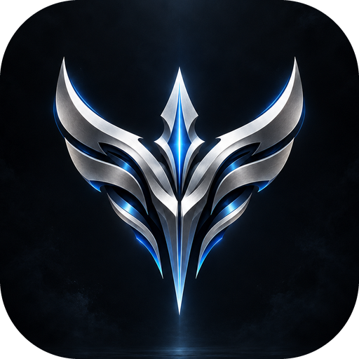

Can't reach BEV
Check your internet connection. BEV will try again by itself when you're back online.
If your internet is working, the website may be down for a moment.
Check your internet connection. BEV will try again by itself when you're back online.
If your internet is working, the website may be down for a moment.